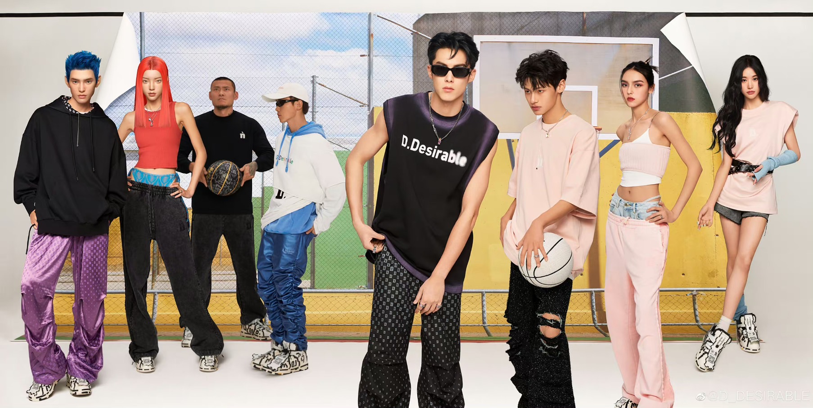
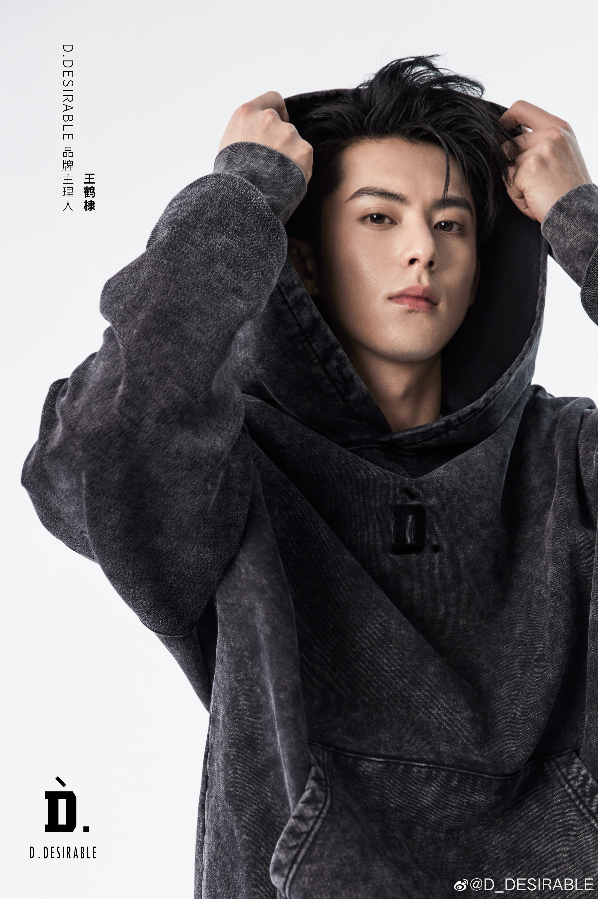
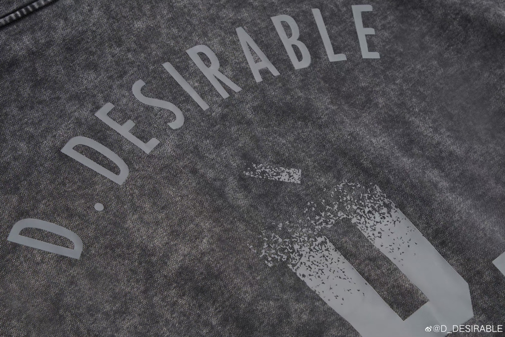
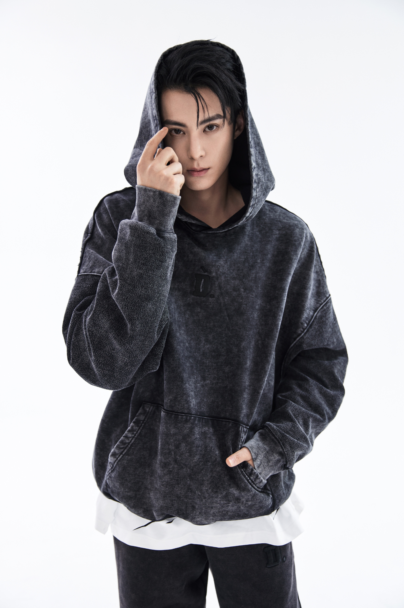
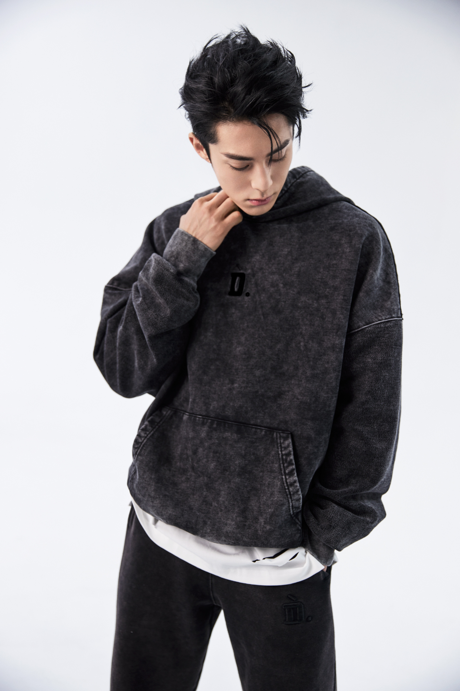
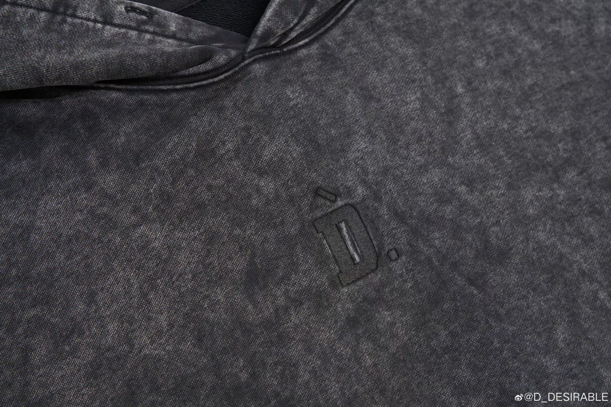
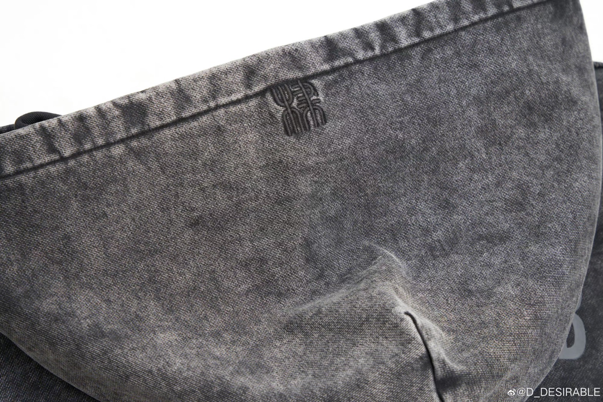
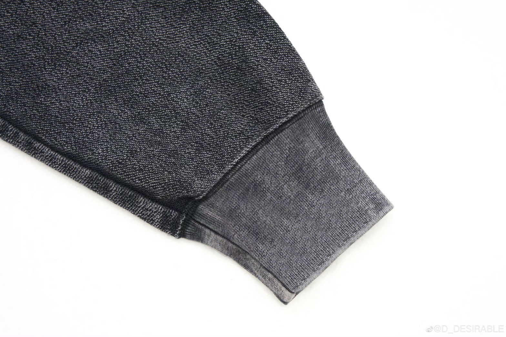

D.DESIRABLE
D.Desirable的到來，既是王鶴棣為自己送上的24歲生日禮物，也是他從演員向主理人身份的全新探索。
D.Desirable的品牌名字由大寫字母D及英文Desirable組成。字母D代表了主理人王鶴棣，是由「棣」宇拼音演變而成， 英文Desirable代表著主理人對個人品牌的嚮往，希望品牌每一次作品的呈現都能令人滿意，是值得被擁有的。 品牌logo化為第四聲的拼音字母D，同音主理人的名字中的「棣」字。
在對D.Desirable的構想中，正因主理人王鶴棣一直以來對於街頭、嘻哈、籃球等多元文化的關注， 將潮流的豐富多元視為重要靈感，才為D.Desirable塑就了更為開放的品牌設計理念。
由於主理人王鶴棣對質感及舒適度的執著要求，所以在探尋潮流和質感的平衡之問花了不少心思。在服裝的版型上面， 採取了OVERSIZE的廓形，面料方面則糅以高品質水洗棉布料，舒適自在又不乏挺闊感。
D.Desirable對於印染工藝的篩選及運用獨具匠心，並兼顧環保理念。比如主理人王鶴棣身穿的這件做舊效果衛衣， 則是以環保的炒色工藝呈現，在整個石磨，發酵等加工過程中，所表現出來深淺不一的做舊效果，更優於普通的染整工藝。
在設計細節上也融入了一些巧思，獨特設計的漢字「棣」立體刺繡，為街頭風格注入中國特有的文化符號。
D.Desirable作為一個獨特的潮流設計品牌，主理人王鶴棣表示，「通過品牌，可以用不同的方式表達自己的想法，喜好，和態度。 品牌是一個連接器，連接無限可能。希望D.Desirable能夠成為一個將創意、時尚、潮流，呈現於生活多方面中的連接紐帶。」
時尚潮流的生活不應被穿上身的服裝所束縛，而是透過更多的維度去感知和創造。D.Desirable相信每個人都有屬於自己獨特的潮流追求， 或許略有不同，但是同樣精彩。未來，D.Desirable願與對設計充滿愛的創意者們一起探索多面角度，解鎖無限可能。
真實且自由，熱愛並創造。
每個人都能成為自己的設計師。
Reality and Freedom, Passion and Creativity.
You can be your own designer.